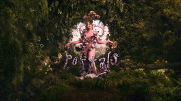

Beginnings
Melanie Martinez is a 27 Year Old American singer and began writing songs at a young age and developed a unique style that blends dark, often unsettling lyrics with playful, childlike melodies. Her debut album, "Cry Baby," was released in 2015 and has since become a cult classic, with its whimsical yet eerie sound and visuals. melanie's music explores themes of childhood trauma, mental illness, and societal pressures, often using characters like Cry Baby to convey her messages. She has amassed a devoted fanbase and continues to create thought-provoking and emotionally resonant music.
CryBaby: the character
"Cry Baby" is a recurring character in Melanie Martinez's music and visual art, who serves as a representation of vulnerability, innocence, and emotional honesty. Cry Baby is depicted as a child-like figure with a distinctive style that includes oversized bows, colorful outfits, and curly pigtails. However, underneath her cute appearance, Cry Baby is often portrayed as being troubled and misunderstood, grappling with issues such as heartbreak, abuse, and societal pressures.
Songs & storyline
Crybaby follows a storyline throught her three albums.

cryBaby: the Album
tells her story growing up, discovering her telekenetic powers and showing her early childhood. This also holds her most streamed song on youtube, DOLLHOUSE.

This album showcases her school life. The Album has a film based on it which can be found here

Portals
Portals shows her perspective through rebirth. as seen throughout the music videos and song names. we see Cryababy in a new, Pink-skinned, 4-eyed form (as seen on the album cover) and how shes breaking free from her past self. the album is still commonly refered to as mm3 (Melanie Martinez 3) during the time fans leaked some of her upcoming songs. almost half of the mm3 leaks were on the album
scandals & leaks
the accusations
melanies biggest contrevery was when she was accused of Sexual Assault on december 4,2017. a woman named timothy heller, one of her close friends, accused her of assulting her. melanie shortly disspelled the rumors on twitter.
Countless Leaks
One of the biggest problems melanie has faced in regards to her carrer is the countless leaks. though the leakers are annonymus its known that at least a few tracks came directly from her producers selling these tracks. as stated previously, mm3 or portals had most of its songs leaked. though the offical releases were different from the leaks the simmalarities were obvious and made the album underwhelming for some fans. melanie contradicts herself when talking about leaks because at times she says that